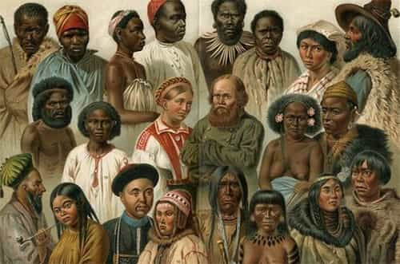
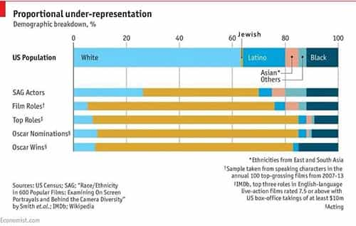
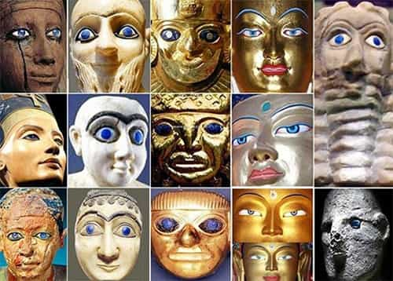

André is a young European who left his decaying country in 2012 for greener pastures. He enjoys exploring subterranean places, reading about a host of interconnected topics, and yearns for Tradition.


Aristotle said that wonder and astonishment are what lead men to the state of pondering and ratiocinating otherwise known as philosophizing (Metaphysics, 982b12). What seemed at first evident, once interrogated through asking for a precise definition and details, becomes troublesome and unclear. What are justice, morality, duty…? Philosophy starts from common-sensical notions by taking a hard, interrogative stance on them. If maintained and underpinned with the proper methodology, the philosophical attitude can lead to a long path of reflection and to many things to say.
Likewise, out of philosophy in the narrow sense, a particular conundrum or the right question can push us a long way. Red pill is just like that. Years ago, I was thinking, “How can I get a notch?” and “What’s our identity?” Today, I got some substantiated answers, but there is still a long path ahead in both thinking and doing.
The left knows the power of question-asking, careful framing and putting forward convenient theories. This is why they methodically chastised several issues, no matter how relevant or legitimate, from the academia, and pushed forth a mixture of Marxism, minoritism and contrived “postmodern” stuff instead. If you cannot ask the right questions, how can you find out the right answers?
Here is a list of such relevant questions I crossed path with in pre-cultural Marxism hegemony era.
From the Enlightenment philosopher Nicolas de Condorcet to Rudyard Kipling, one can spot a golden thread. The former, in a “sketch of the future progresses of mankind”, claimed that Europeans had a duty to spread the so-called Enlightenment principles to the whole world. Such a claim is often derided by contemporary Leftists as a mere mask for particular interests, yet Condorcet really believed that all inequalities were caused by custom, false beliefs and forgotten abuses: Europeans had to spread lack of religion, free trade and technology everywhere so that everyone could develop, thus ending the “artificial inequalities.” A typical secularist optimist, Condorcet thought Western particular interests and other peoples’ interests would be immanently reconciled and united through “progress.”
Rudyard Kipling, coming one century after, had a more balanced and experienced view of human nature and diversity, nonetheless he still clung to the idea of a global well-being whose Europeans would be responsible: such is, he said, the “white man’s burden.” A heavy weight, a chore, something that could cost money instead of actually earning it—yet still a calling and an identity.
When easy illusions about the nature of modernity started crumbling, the identity of the Western civilization was also at stake. If “progress” shows unable to play God’s role, what should we turn to instead? Can there be a modern civilization without perpetual growth? If the “white man’s burden” should be thrown away, does the West still have a higher calling?
While going through some of Lothrop Stoddard’s writings, I was warmly surprised to meet with a summing-up of the situation of middle classes in Europe after 1918. “The plight of the middle classes has attracted much attention from students of contemporary affairs”, he wrote in 1925. Reading these lines I couldn’t help but feel some nostalgia. Academics who cared about the middle classes!
Today, the topic is mostly thought of through Marxist glasses—middle classes are blamed as “bourgeois”, egoistic, unduly privileged, philistine… It hasn’t always been like that. And the university was not always a den of underhanded Leftists trying to indoctrinate promising children against their own social identity.
Just like many of the contemporary red-pill thought, Stoddard’s portrayal shows honest but quite uncomfortable. At the end of the Belle époque, middle classes were slowly getting screwed by a handful of wealthy bankers and industrials who squeezed them from above, and underwent rising taxes from governments who would rather pressure dispersed individuals than well-connected cronies. Their members were amongst the bravest soldiers at war. As a reward, those who survived faced inflation, unemployment, and although many of them had supported social State programs, they were directly threatened by the rise of hateful Bolsheviks.
On a bright note, Stoddard shows how middle class members answered to Bolshevism by developing a class solidarity of their own. It seems, though, that middle-classers being together and strong was a problem to the powerful, for middle class unions got repressed by the States in the name of “antifascism” and denied as “bourgeois” by the new masters of the academia.
Cultural Marxism also leads to consider classes as entities at war with each other. The more classes you split society into, as they have done with any new “minority” that got hyped-up in the media and academia, the more antagonism and mistrust you create. From a Marxist view, and we know that feminism conceives “women” not as a sex but as a class in that sense, classes have irreconcilable interests and must be at war all the time.
Ironically, Marxists never seem to think that their own view may be responsible for class wars, and that one can perceive interpersonal relationships the same way—loaded with irreconcilable interests. It has escaped them that a fine society succeeds at equilibrating the interests, not at dividing them pointlessly.

It seemed rather evident and commonsensical at all times that human individuals and peoples differed from each other. The traditional world knew well about both peoples, or nations, and castes, which reflected the individuals’ vocations and peculiarities. The multiplicity of categories one could find in European Middle Ages or pre-British rule India makes most modern thinkers dizzy, yet they were handled casually and did not seem overly problematic.
In fact, problems with categories of people appeared with modernity. Nationalisms developed along with big States, crushing regional differences underfoot, whereas eighteenth-century philosophers such as the aforementioned Condorcet tried to reduce human differences to effects of the environment.
These remarks do not imply that modern thinkers are unable to understand human diversity, biological or not. Empirical approaches showed repeatedly that ingrained differences between the sexes, just like between races, exist. Our own views on hypergamy or, say, women’s conformism-prone tendencies stem from rediscovering a socially taboo but persistent wheel.
Human biodiversity was a prime target of ferocious leftist assaults since at least the Boasian trend in anthropology. Centuries of empirical data were rejected, flesh and blood individuals were replaced by abstract units. The “gender” trend is merely another outgrowth of this abstract individual push: sex is disconnected from biology, turned into a kind of psychological sex, chosen out of a mystically undetermined will.
Thanks to genetics, and to evolutionary and comparative psychology, human biodiversity can still be studied in scattered places amongst the academia. Science recovered a bit from the Marxist assault. However, it is powerless at struggling alone against Leftist hegemony, and scientific views on human biodiversity remain enclosed in ivory towers whereas the same universities also breed “studies” department that wield much more cultural influence. Should I add that humanities departments maintain a strict taboo on any empirically—and commonsensically—informed view about races and the sexes?
If you have watched Idiocracy, especially the first minutes of the movie, you know what genetic deterioration is. The problem reached scientists’ awareness in the nineteenth century: as modern technology saved and healed people who would have been selected off on earlier times, wasn’t modern civilization undermining itself?
Individuals and peoples are not equally excellent at creating and maintaining a civilization. When the least able breed more than the excellent, civilization is at risk of being overrun with idiots who will dumb it down to their level if not destroying it altogether. Genetic deterioration can take other forms, such as when people with genetic disease are allowed to breed and, if they do, propagate it through the next generation.
Incidentally, this idea is also relevant when considering various groups inhabiting the same territory: if some groups breed more than others, the latter are at risk of being replaced or swamped down by the former.
This theme became taboo at the same time than eugenics got massively smeared—by the same who would distort and curse the idea of race a few decades later. If interested, take a look at Richard Lynn’s books Dysgenics (1996) and Eugenics, a reassessment (2001) that give a fine introduction to the topic.

The biggest elephant in the room. Whether you look at Hollywood, at the academia, at the legal world, at Wall Street or at Leftist stirrers, you will see a lot of Jews. They occupy the institutions, decide on cultural orientations, organize so that such and such a cause is suddenly everywhere in the media and university. The theme has been evoked sometimes, mostly by Jewish individuals—non-Jews are busier avoiding tripping on the carpet.
Those who built the Western civilization are supposed to keep quiet facing the most blatant examples of nepotism and tribalism. As children, we were fed a steady diet of “muh Holocaust muh poor innocent victim” narrative with plenty of pathos, and we grew up in a world where only mentioning the Jewishness of powerful people is enough to be labelled an “anti-Semite.”
The topic has become risky since Jews started taking over culture. When the European youth were dying by the thousands every day, in 1915, the Boasians—extreme environmentalists, mostly Jewish—reached absolute power over departments of anthropology. Skeptics like Madison Grant were marginalized in an increasingly Jewish-dominated academia. Later, in the 40s, Jewish journalists would also play a crucial role in demonizing Charles Lindbergh. All these are important metapolitical manipulations, yet if you mention who did what, be careful of the “anti-Semite” smear hanging over your head!
Kevin MacDonald’s brilliant trilogy about Jewish communautarism and influence is a shining exception to the general academic taboo. Even Hannah Arendt (herself a Jew) got a lot of heat from her own community after she dared mentioning the existence of Jewish kapos in German concentration camps—that is, how the “all-Jews-are-innocent-and-pure” narrative showed false.
Masonic lodges are less of a taboo, today, than before. They are still shrouded, not in mystery, but in social pressure. If you want to talk about the eighteenth-century Masonic lodges and how they relate to the so-called Enlightenment, fine. However, if you want to pursue the inquiry into how Freemasonry played a crucial role in anticlericalism, secularization, or overlapped with the radical Left in the nineteenth century, most teachers will retreat.
The topic has been clouded by fakes, contradictory theories and cryptobabble. Some hypothesize Masons are the first responsible of this claptrap—nothing better than a chaos of contradictory theories, lies, and a general air of paranormal to daunt wannabe investigators and maintain secrecy.
In truth, one does not need to dabble much in esotericism to uncover influence trafficking, corruption and metapolitical manipulations carried in at least some Masonic lodges. The topic still remains taboo. Studying power relationships and privilege in Leftist academia remains synonymous of crafting an elaborate fiction where “straight-white-males” are thrown into the role of the bad guy.

As a friend of mine once said, “identifying as an Aryan may be the ultimate thought crime nowadays.” In the nineteenth century, scholars discovered that Europeans shared a deep brotherhood amongst themselves, with some Asiatic peoples such as the Kalash, and with the upper castes of India.
Linguists unearthed common roots behind Germanic, Latin, and Hindi words. Anthropologists found striking physical similarities between Europeans and some Easterners. Historians like George Dumézil put forth what has been called the Indo-European tripartition, not to mention how the Swastika, among other symbols, has been used on the East and West for thousands of years. National Socialist use of the symbol was merely an attempt at binding the party and its crusade to something much wider.
Now, Indo-European studies still exist, but they are confined in historical departments virtually devoid of cultural influence in the mainstream, and official scholars perpetuate frauds such as pretending that the word “Aryan” merely designated social classes—whereas it clearly had a hereditarian component as well—in order to neuter the potential metapolitical content of their field.
Cultural Marxism is hidden in plain sight, both in how some subjects are treated and in what can hardly be said. We are left with a mutilated anthropology, endless social and metapolitical divisions thanks to aggressive minoritism, unaccountable power-wielders, and an incomplete and twisted view of history that only worsened thanks to libtards’ obsession to tarnish Western history.
Many of our cultural problems come from self-perpetuating Leftist institutional power. By taking the field, they also shaped the norms, and did so without assuming the responsibility of what they did—instead they have put on the shoulders of those they were actually dispossessing and disempowering.
Time has come to take back the academia by asking serious questions and deconstruct the boundaries, double standards, taboos, framings, unsaid beliefs… enforced by these cultural supremacists. Intellectual diversity will make America and the whole West great again.
Read Next: Why College Is A Warzone For Young Men